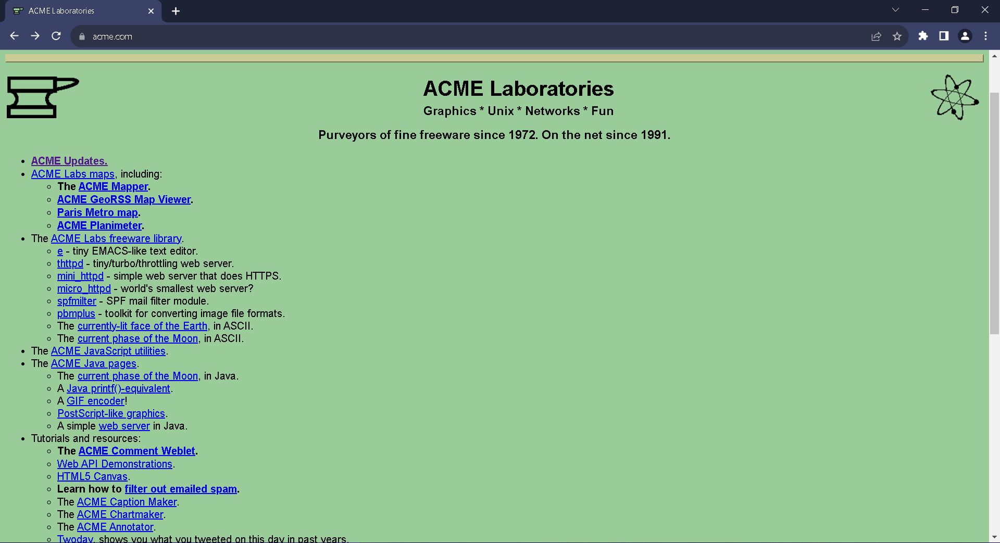
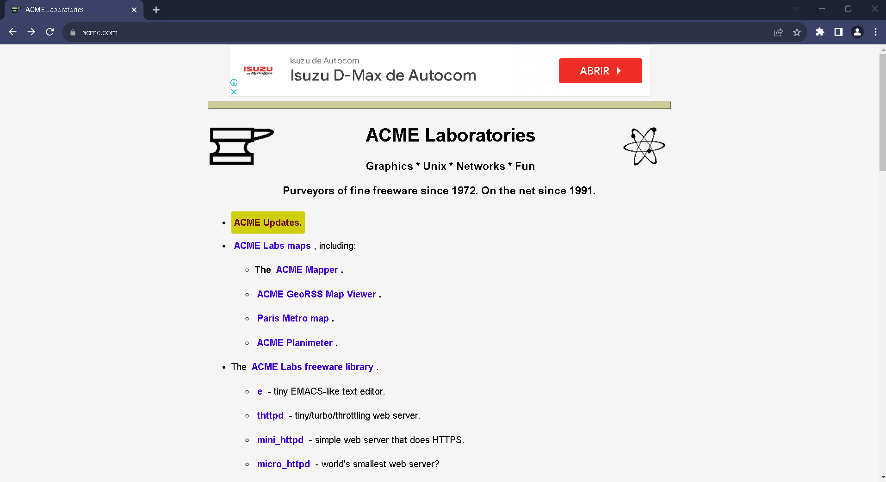

Exercise 1 Usability Fixes
This is the website I chose: ACME Laboratories

Before

After
Fix 1: Improve Readability and Legibility (Learnability)
To enhance learnability, the following changes were made:
- Changed font to Arial, Helvetica, sans-serif for better readability.
- Increased text size to 16px for improved legibility.
- Increased line spacing to 2 for easier reading.
- Limited the maximum line length to 900px for better readability on wider screens.
- Changed the background color to a more visually appealing #f5f5f5.
Fix 2: Enhance Navigation (Efficiency and Safety)
To improve efficiency and safety, the following navigation changes were implemented:
- Styled navigation links with a #4000d4 color and made them bold for better visibility.
- Added a padding for the links so there is no confusion on the links for safety reasons
- Added a hover psuedocode for the links. Background color of #cfcf0d and border radius when hovered to distinguish each link when hovered